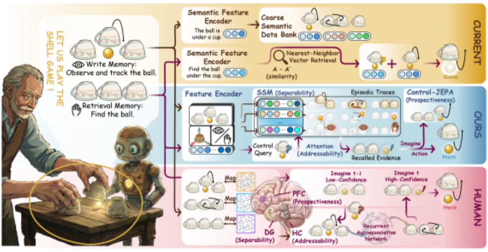
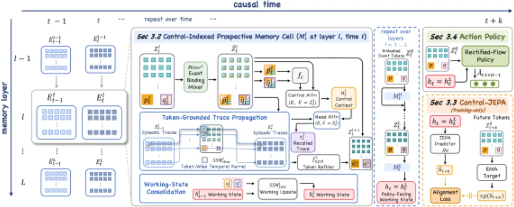
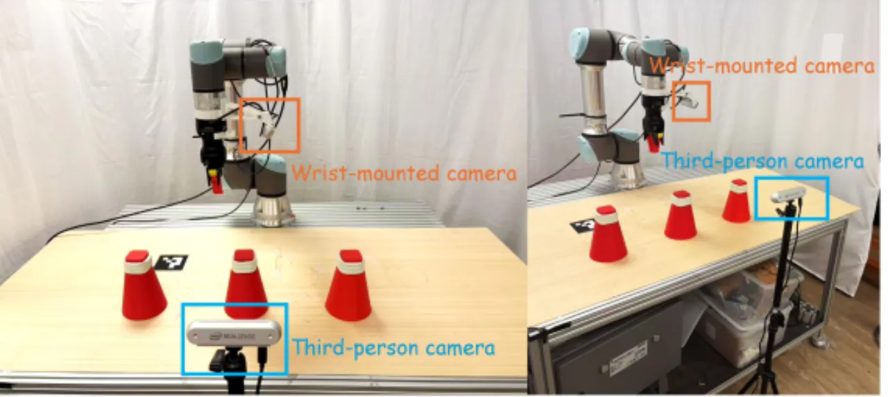
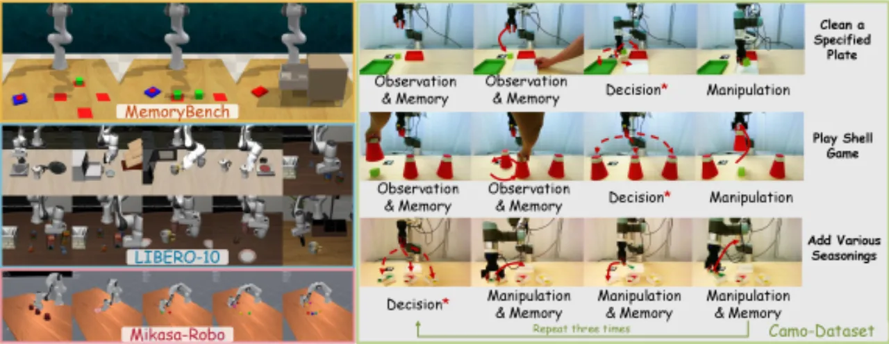
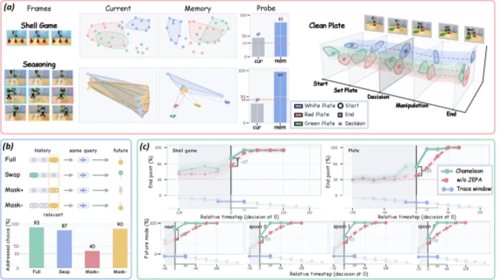

机器人在执行操作任务时，往往需要依赖远早于当前决策时刻观察到的历史信息——即"观测-动作延迟"（observation–action delay）问题。Chameleon 提出了一种约 60M 参数的视觉运动策略，通过控制索引前瞻性记忆（control-indexed prospective memory）模块，使机器人能够在正确的时机检索并利用历史轨迹，从而在真实机器人任务中将决策成功率从 22.5% 大幅提升至 80.8%。
现有的记忆增强策略依赖语义相似度或视觉相似度检索历史轨迹，往往召回貌似合理但与当前决策无关的轨迹。这一根本缺陷导致机器人在视觉别名（visual aliasing）严重的任务中频繁犯错——例如"杯子游戏"（shell game）中多个杯子外观相同，历史上哪个杯子藏着球才是关键。
"Memory must be policy-facing—designed to make the right past actionable at the right moment."
——论文核心论点：记忆系统必须面向策略设计，让正确的历史在正确的时刻可用。

论文将所提三项功能需求类比于人类情景记忆的神经机制：
Chameleon 通过四个核心模块实现控制索引前瞻性记忆：①将多模态观测编码为具身事件 token（embodied event tokens）；②通过选择性状态空间模型（SSM）进行逐 token 轨迹传播；③以学习到的控制索引进行可寻址检索；④将检索到的历史整合为前瞻性策略状态，驱动整流流（rectified-flow）动作生成头。

每个时间步 t，系统将来自多摄像头的视觉补丁（经 DP 风格编码器处理）、本体感知（robot state）以及语言指令（经冻结 DistilBERT 编码）拼接为具身事件 token：
Zt⁰ = Concat[Xt¹, ..., Xtᵛ, Prop, Lang]。
每类 token 保持独立，为后续分离性存储奠定基础。
使用选择性状态空间模型（SSM）在时间维度上独立传播每条 token 流的轨迹，而非将所有历史压缩为单一递归向量。这确保视觉、本体感知等不同来源的历史各自保持独立表示，实现可分离性。事件绑定步骤（Event Binding）通过自注意力混合器让各类 token 先相互交互，使写入的事件已包含任务与身体的条件化信息。
模型从本体感知与语言中构建学习到的控制索引（control index），再通过对当前场景证据的注意力加以精化，形成控制上下文（control context）。该上下文以注意力方式查询逐 token 历史轨迹，检索与当前决策相关的历史，实现可寻址性。检索到的轨迹合并为"快"工作状态（fast working state），与"慢"情节级记忆（slow episode-level memory）分离。
区别于重建过去图像或状态的训练目标，Control-JEPA 让当前工作状态预测未来的控制上下文：
ûₜ₊ₖ = gθ([hₜ, ηₖ])
目标为后续策略步真实使用的控制上下文，使记忆具有前瞻性和"动作就绪"特性。训练损失采用 smooth-L1 对齐（带 stop-gradient 目标）与跨多个预测视野 {1, 2, 4, 8, 16, 32} 的方差正则化。动作生成头使用整流流（rectified-flow），以无噪初始化 Aτ = (1−τ)A₀ + τA* 进行训练。

实验在三类基准上评估 Chameleon：（1）自建真实机器人数据集 Camo-Dataset，专门测试观测-动作延迟下的非马尔可夫决策；（2）公开仿真基准 LIBERO-10、MemoryBench、MIKASA-Robo；（3）消融研究与机制探针，验证三项功能性质。
Camo-Dataset 包含三类任务：清洁指定盘子（Clean a specified plate）、杯子游戏（Play shell game）、添加调料（Add various seasonings）。评估指标包括决策成功率（DSR）和总体成功率（SR）。
| 方法 | 平均 DSR | 平均 MSR | 平均 SR |
|---|---|---|---|
| Diffusion Policy | 22.5% | — | 21.3% |
| Chameleon（完整） | 80.8% | 86.1% | 71.3% |
| w/o memory | 20.4% | 64.8% | 17.6% |
| w/o Control-JEPA | 71.6% | 72.2% | 52.8% |
| w/o control index | 48.8% | 56.5% | 26.0% |
| 基准 | Chameleon | 最强基线 | 备注 |
|---|---|---|---|
| MemoryBench（专项策略） | 97.3% ±4.5 | SAM2Act+ 94.3% | 3个任务，各100条演示 |
| LIBERO-10（混合策略） | 87.1% ±0.8 | MemoryVLA 93.4%* | 10个任务，各50条演示 |
| MIKASA-Robo（混合策略） | 75.1% ±1.4 | GMP 67.8% | 5个非马尔可夫任务 |
| MIKASA-Robo（专项策略） | 95.6% ±1.0 | DP-VPWEM 86.5% | 2个任务设置 |
* MemoryVLA 为 7B 参数的大型视觉-语言-动作模型；Chameleon 仅 ~60M 可训练参数。

消融实验清晰揭示各模块贡献：去掉记忆模块后 DSR 从 80.8% 跌至 20.4%，接近随机水平；去掉控制索引后 DSR 降至 48.8%，说明基于任务需求的可寻址检索至关重要；去掉 Control-JEPA 训练目标后 DSR 降至 71.6%，验证了前瞻性训练对于将记忆转化为动作就绪状态的价值。

本工作专注于"片段级模仿策略中的控制索引前瞻性记忆"（episode-level imitation policies）。控制索引记忆如何在不同具身形态、传感器布局和任务类型之间扩展，仍是开放性问题。作者指出这是自然的后续研究方向。
在 LIBERO-10 基准上，剩余的失败案例主要是执行层面的错误（不稳定的抓取、不精确的放置），而非记忆检索失败。这表明动作生成策略本身的精度仍有提升空间，与记忆模块相对解耦。（stated）
论文展望将控制索引记忆作为可复用模块嵌入基础级机器人策略，支持跨任务、跨具身的泛化迁移。当前工作尚未在此规模上验证。（stated 作为未来方向）
作者指出，将前瞻性记忆与主动感知（active perception）相结合——让机器人在信息变得对决策至关重要之前主动获取证据——是一个有前景的扩展方向，但当前工作中未涉及。（stated 作为未来方向）
推断（inferred）：Chameleon 以监督模仿学习为基础，其性能可能随演示数据质量与数量的变化而波动。Control-JEPA 的多视野预测目标同样依赖足量的历史序列，在低数据量场景下的表现尚不明确。